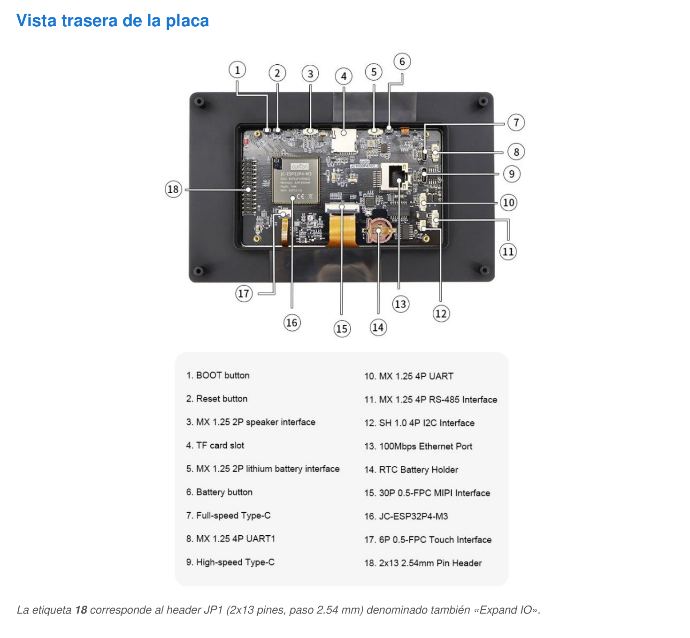
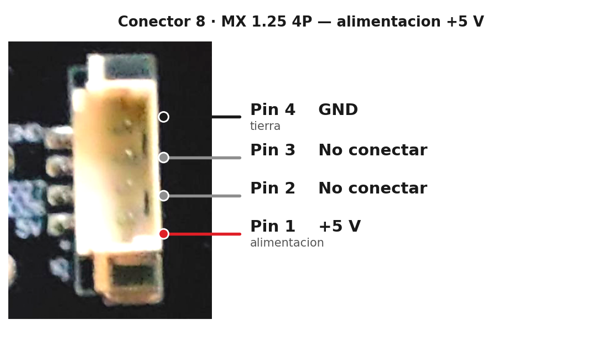
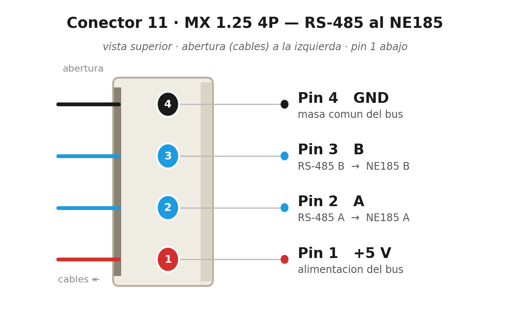

Guition JC1060P470C_I
Pinout y conexiones
ESP32-P4 + ESP32-C6 (Wi-Fi/BT) · display DSI 7" 1024×600 · touch GT911

Cara trasera: numeración de conectores del fabricante
| SoC principal | ESP32-P4, RISC-V dual-core 400 MHz |
| Memoria | 32 MB PSRAM · 16 MB flash |
| Radio | ESP32-C6 por SDIO (Wi-Fi 2,4 GHz + BT 5 LE) |
| Pantalla | IPS 7" 1024×600, MIPI-DSI 2 carriles (JD9165BA) |
| Táctil | GT911 capacitivo (I²C) |
| Almacenamiento | microSD, SDMMC slot 0 (IOMUX) |
| Audio | ES8311 + amplificador NS4150 |
| Reloj | RTC RX8025T con pila CR1220 |
| Cámara | OV02C10 de 2 MP (MIPI-CSI) |
| Alimentación | 5 V DC, ~600 mA (pico ~1 A) |
| Expansión | JP1 2×13 (2,54 mm) · RS-485 J4 · I²C CN5 |
Contenido
Generado a partir del código del firmware joint_spl_145_control (ESP32-P4 / Guition JC1060P470C_I).
Última revisión: 17 septiembre 2026, contrastado con el código de la v2.32 ·
Repo: github.com/Ehuntabi/victron-jc1060p470c-esp32p4
1. Resumen del módulo
- SoC principal ESP32-P4 (RISC-V dual-core 400 MHz, 32 MB PSRAM, 16 MB Flash).
- SoC de radio ESP32-C6 conectado por SDIO (Wi-Fi 2.4 GHz + BT 5 LE) gestionado por
esp_hosted.
- Display IPS 7" 1024×600 con controlador JD9165BA, interfaz MIPI-DSI 2 lanes.
- Touch capacitivo GT911 (I2C compartido con el RTC y el codec).
- RTC RX8025T (I2C 0x32) con pila CR1220.
- microSD slot 0 con SDMMC IOMUX dedicado.
- Codec audio ES8311 + amplificador NS4150.
- GPIO 1 (JP1) = relé piloto del modo excedente solar del frigo.
- GPS u-blox NEO-M9N en UART2 (GPIO 3 RX / GPIO 2 TX, conector JP1), 38400 baudios.
- RS-485 onboard via MAX485 (U8) en UART1, conector J4 — para hablar con el derivador NE185.
- Frigo trivalente: sensores DS18B20 en GPIO 4 (JP1 pin 13) y ventilador PWM en GPIO 5 (JP1 pin 15).
2. Display MIPI-DSI (panel JD9165BA)
| Función | Pin ESP32-P4 | Notas |
|---|
| Backlight (PWM) | GPIO 23 | LEDC timer 1 / canal 1 |
| Reset panel | GPIO 0 (NC en firmware) | LCD_RST va a GPIO 0 en el esquemático, pero GPIO 0 es strapping → el firmware lo deja sin conectar (BSP_LCD_RST = NC), sin reset por software. GPIO 27 NO es el reset del panel: es la RX del NE185. |
| MIPI-DSI clk + data | PHY interno | 2 lanes, bitrate 750 Mbps, dotclk 51 MHz (el dtsi pide 51,2; con 52 cuelga el init del JD9165) |
| LDO PHY DSI | LDO ch 3 | 2500 mV → VDD_MIPI_DPHY |
Resolución 1024×600, RGB565. Buffer LVGL: 50 líneas en PSRAM. Conector físico #15 (FPC 30P 0.5 mm).
3. Touch capacitivo GT911 (I2C)
| Función | Pin | Notas |
|---|
| I2C SDA | GPIO 7 | Bus I2C_NUM_1, 400 kHz, compartido |
| I2C SCL | GPIO 8 | |
| TOUCH INT | GPIO 47 | Interrupción |
| TOUCH RST | GPIO 48 | Activo bajo |
| Dirección | 0x14 / 0x5D | Detección automática |
4. RTC RX8025T (I2C, addr 0x32)
| Función | Pin / Reg | Notas |
|---|
| I2C SDA / SCL | GPIO 7 / 8 | Bus compartido |
| Vcc | 3.3 V | Backup CR1220 |
| Reg. tiempo | 0x00–0x06 | BCD: SEC, MIN, HOUR, WEEK, DAY, MONTH, YEAR |
| Reg. CONTROL | 0x0F | bit 6 = STOP oscilador |
| Reg. FLAG | 0x0E | bit 1 = VLF (Voltage Low Flag) |
5. microSD (SDMMC slot 0, IOMUX)
| Función | Pin |
|---|
| CLK / CMD | GPIO 43 / 44 |
| D0..D3 | GPIO 39 / 40 / 41 / 42 |
| TF_VCC | LDO ch 4 (3.3 V) — esp_ldo_acquire_channel(4) antes del mount |
| Pull-ups | Internos (SDMMC_SLOT_FLAG_INTERNAL_PULLUP) |
FATFS con LFN heap mode. Montado en /sdcard. Logs en /sdcard/frigo/ y /sdcard/bateria/.
6. ESP32-C6 — Wi-Fi/BT vía SDIO (slot 1)
| Función | Pin | Notas |
|---|
| CLK / CMD | GPIO 18 / 19 | 40 MHz |
| D0..D3 | GPIO 14 / 15 / 16 / 17 | |
| Slave RESET | GPIO 54 | esp_hosted reset al ESP32-C6 |
NO usar GPIO 14–19 ni 54 para otros fines. Son la conexión SDIO al radio.
7. Audio — codec ES8311 + amp NS4150
| Función | Pin | Notas |
|---|
| I2S MCLK / BCLK / LRCK / DOUT | GPIO 13 / 12 / 10 / 9 | |
| PA_CTRL (NS4150) | GPIO 11 | Activar amp (active high) |
| I2C codec | GPIO 7 / 8 | Misma I2C que touch + RTC, addr 0x18 |
8. Frigorífico — sensores y ventilador
| Función | Pin | Conector | Notas |
|---|
| 1-Wire DS18B20 | GPIO 4 | JP1 pin 13 | Pullup a 3.3 V: 4.7 kΩ con cable corto. Con cable largo (~2 m) bajar a 1 kΩ (más capacidad de bus → 4.7 kΩ se queda flojo y falla la lectura). |
| Ventilador PWM | GPIO 5 | JP1 pin 15 | LEDC 18 kHz, duty por T_Aletas (mínimo 30 %, arranque con un pulso al 100 %). Ataque: P4 → optoacoplador PC817 → MOSFET IRLR7843 (con 1N4148 de rueda libre). 18 kHz queda fuera del oído de la mayoría de adultos, pero no subir la frecuencia sin cambiar el opto: a 25 kHz el ciclo baja a 40 µs y el control se degrada a duty bajo |
9. Modo excedente solar — relé piloto del frigo (GPIO 1)
| Función | Pin | Conector | Notas |
|---|
| Relé piloto excedente solar | GPIO 1 | JP1 pin 7 | Nivel alto = relé energizado. Inyecta 13 V a la bobina del relé tocho que activa el D+ en marcha del frigo trivalente. Máquina de estados en components/frigo/frigo_solar.c, #define FRIGO_SOLAR_RELAY_GPIO 1. |
10. NE185 RS-485 directo (UART1, MAX485 onboard)
Componente main/ne185/. El P4 habla RS-485 directamente con el
derivador Nordelettronica NE185 a través del transceptor MAX485 (U8) integrado en
la placa Guition. Sustituye al panel NE187 retirado. No hace falta caja
ni hardware externo: solo un cable de 4 hilos del NE185 al conector J4.
| Función | Pin P4 | Conexión | Notas |
|---|
| UART1 TX | GPIO 26 | pin D del MAX485 onboard (U8) | 38400 8N1 |
| UART1 RX | GPIO 27 | pin R del MAX485 onboard (U8) | 38400 8N1 |
| DE/RE | — | controlados por NAND (U7) auto-direccion | NO hace falta GPIO extra |
| Bus RS-485 | — | Conector J4 (MX 1.25 4P, conector #11) | Pines A, B, GND, +5V |
Protocolo (38400 8N1, master, un frame cada 100 ms): en reposo alterna
FF 40 00 00 3F (1 de cada 16 frames) con FF 00 00 00 FF, que es la
misma alternancia que manda el NE187; con FF 40 solo, el NE185 degrada a la trama
sin tanques. Pulsos de botón: luz interior FF 01 00 C0 C0, luz exterior
FF 02 00 C0 C1, bomba FF 04 00 C0 C3 (8 frames de hold + 5 de reposo).
El antiguo init FF 40 00 80 BF está descartado: era la corrección
errónea de mayo-2026 que dejó de funcionar la lectura. Respuesta de 20 bytes (eco del comando en
0..4, b[6]=0x02 como constante estructural que descarta tramas parásitas,
b[16] bit 0 = 220 V conectados) con checksum
b[19] = (suma de b[5..18]) & 0xFF. API publica: ne185_init,
ne185_get(ne185_data_t *), ne185_send_cmd('i'/'o'/'p').
11. GPS u-blox NEO-M9N (UART2)
Añadido el 23-ago-2026. El módulo se conecta al
JP1, que es donde quedaban pines libres. UART2 era el único puerto serie
sin usar: UART0 es la consola de depuración y UART1 el NE185 por RS-485.
| Función | Pin P4 | Conector | Notas |
|---|
| UART2 RX | GPIO 3 | JP1 | Recibe del TX del módulo |
| UART2 TX | GPIO 2 | JP1 pin 9 | Hacia el RX del módulo. Hoy NO se usa: solo haría falta para configurarlo por UBX. Se reserva para que otro periférico no lo ocupe |
| Alimentación | 3,3 V y GND | JP1 | El NEO-M9N es de 3,3 V, igual que el P4: no hace falta adaptar niveles |
38400 baudios 8N1, y no es un número al azar: es el de fabrica de la serie
M9. Los u-blox M8 anteriores venían a 9600, así que probar a 9600 y no ver nada es el error
típico con estos módulos. El firmware solo ESCUCHA (NMEA); no manda comandos UBX, porque
cambian entre versiones del firmware del propio módulo.
Historia del pin 9, por si aparece en documentos viejos: el GPIO 2 estuvo
reservado para un medidor PZEM que se retiró del firmware y cuyo divisor
resistivo nunca llegó a soldarse (confirmado 23-ago-2026). El pin está
limpio; sus esquemas se borraron del repo para que no confundan.
Se comprueba el checksum de cada trama: con la velocidad
equivocada o con ruido en el cable llegarían líneas que parecen NMEA con números creíbles
dentro, y una posición inventada es peor que no tener posición. Software en
main/gps/gps.c; pantalla en Ajustes → GPS, con las tramas en crudo para
diagnosticar.
12. LDO internos del ESP32-P4
| Canal | Tensión | Carga | Notas |
|---|
| LDO ch 3 | 2500 mV | VDD_MIPI_DPHY | Activado por bsp_display_new() |
| LDO ch 4 | 3300 mV | TF_VCC microSD | Activado por datalogger_init() antes del mount |
13. Buses compartidos / consideraciones
- I2C bus (I2C_NUM_1, 400 kHz, SDA=7 / SCL=8): GT911 (0x14/0x5D), RX8025T (0x32), ES8311 (0x18). Sin colisiones.
- SDMMC: dos slots. Slot 0 IOMUX (GPIO 39–44) → microSD. Slot 1 GPIO matrix (GPIO 14–19) → ESP32-C6. Paralelos sin conflicto.
- UARTs: UART0 consola debug (GPIO 37/38 internos). UART1 NE185 RS-485 via MAX485 onboard (GPIO 26/27 → conector J4). UART2 GPS NEO-M9N (GPIO 3 RX / GPIO 2 TX → JP1). GPIO 1 (JP1 pin 7) = relé excedente solar.
- PSRAM: 32 MB. Framebuffer DPI + buffers LVGL + ring buffer histórico batería (~945 KB) + allocs grandes.
14. Mapa global de pines GPIO
| GPIO | Función | Periférico / Notas |
|---|
| 0 | NC (strapping) | LCD_RST del JD9165BA según esquemático, pero el firmware lo deja sin conectar (GPIO 0 es strapping; BSP_LCD_RST = NC) |
| 1 | GPIO out | Relé excedente solar del frigo (JP1 pin 7) |
| 2 | UART2 TX | GPS NEO-M9N (JP1 pin 9) — reservado, hoy sin usar |
| 3 | UART2 RX | GPS NEO-M9N (JP1) — 38400 8N1 |
| 4 | 1-Wire | DS18B20 frigo (JP1 pin 13, pullup 4.7 kΩ; 1 kΩ si cable ~2 m) |
| 5 | LEDC PWM | PWM Ventilador frigo (JP1 pin 15, 18 kHz) |
| 7 | I2C SDA | GT911 + RX8025T + ES8311 |
| 8 | I2C SCL | |
| 9 | I2S DOUT | Codec ES8311 |
| 10 | I2S LRCK | |
| 11 | PA_CTRL | NS4150 amp |
| 12 | I2S BCLK | |
| 13 | I2S MCLK | |
| 14–17 | SDIO D0–D3 | ESP32-C6 esp_hosted (no usar) |
| 18 / 19 | SDIO CLK / CMD | ESP32-C6 (no usar) |
| 23 | LEDC PWM | Backlight LCD |
| 26 | UART1 TX | NE185 RS-485 — pin D del MAX485 onboard (U8) → conector J4 |
| 27 | UART1 RX | NE185 RS-485 — pin R del MAX485 onboard (U8) → conector J4 |
| 39–44 | SDMMC | microSD slot 0 IOMUX |
| 47 | GPIO in | Touch GT911 INT |
| 48 | GPIO out | Touch GT911 RST |
| 54 | GPIO out | Reset ESP32-C6 |
Resaltados = los que añade este proyecto con cableado externo (frigo, relé solar, NE185 y GPS). El resto es hardware propio de la placa Guition.
Pines no listados → libres para periféricos adicionales (los del JP1 vivos: 20, 32, 45 y 46 — el 2 y el 3 los ocupa ya el GPS).
15. Conectores físicos del módulo
| # | Conector | Función |
|---|
| 1 | BOOT button | Pulsador BOOT del ESP32-P4 |
| 2 | Reset button | EN/RESET del ESP32-P4 |
| 3 | MX 1.25 2P | Salida altavoz |
| 4 | TF card slot | microSD slot 0 IOMUX |
| 5 | MX 1.25 2P | Entrada batería Li-ion 3.7 V |
| 6 | Battery button | On/off batería |
| 7 | USB-C FS | Programación + 5 V |
| 8 | MX 1.25 4P (J5) | Alimentación 5 V (UART1, no usar) |
| 9 | USB-C HS | USB 2.0 HS + 5 V |
| 10 | MX 1.25 4P | UART externo |
| 11 | MX 1.25 4P (J4) | RS-485 con MAX485 onboard |
| 12 | SH 1.0 4P (CN5) | I2C externo |
| 13 | RJ45 | Ethernet 100 Mbps |
| 14 | Battery holder | CR1220 del RTC |
| 15 | FPC 30P 0.5 | MIPI-DSI 2 lanes |
| 16 | JC-ESP32P4-M3 | Módulo SoC principal |
| 17 | FPC 6P 0.5 | Touch GT911 |
| 18 | Pin Header 2×13 (JP1) | Expansión GPIO 2.54 mm |
16. JP1 — pines disponibles para periféricos externos
Solo se usan los 20 pines superiores (1–20). El conector IDC 2×10 disponible
es más corto que el header 2×13: se enchufa pegado al borde superior y solo alcanza hasta el
pin 20. En el diagrama de abajo, los pines 21–26 (las 3 filas inferiores:
GPIO 33, radio del ESP32-C6 e I²C externo) quedan fuera del conector y no son accesibles.

| Pin | Señal | Estado |
|---|
| 1, 3, 18 | VCC3V3 | Alim 3.3 V |
| 2, 4 | VOUT-BAT | 5 V bidireccional |
| 5, 6, 16 | GND | Masa |
| 8 | NC | No conectado |
| 7 | GPIO 1 | Relé excedente solar (frigo) |
| 9 | GPIO 2 | GPS NEO-M9N — UART2 TX (reservado, hoy sin usar) |
| 10 | GPIO 47 | Touch INT (interno) |
| 11 | GPIO 3 | GPS NEO-M9N — UART2 RX, 38400 8N1 |
| 12 | GPIO 46 | Libre |
| 13 | GPIO 4 | Frigo DS18B20 |
| 14 | GPIO 45 | Libre |
| 15 | GPIO 5 | Frigo PWM Ventilador |
| 17 | GPIO 20 | Libre (único ADC1 CH4 disponible) |
| 19 | GPIO 32 | Libre |
| 21 | GPIO 33 | Libre (queda fuera del IDC 2x10) |
| 20, 22, 24, 26 | — | Radio ESP32-C6 |
| 23, 25 | — | I²C externo (ES I²C) |
- Alimentación: 3.3 V en pines 1, 3, 18; 5 V (VOUT-BAT) en pines 2, 4. GND en 5/6/16.
- UART libre extra: ninguno. UART2 era el último y lo ocupa el GPS (pines 9 y 11). Quedan sueltos los GPIOs 20, 32, 33, 45 y 46, pero no forman un puerto serie completo.
- ADC: GPIO 20 (pin 17) tiene ADC1 CH4 disponible. PWM: cualquier GPIO libre (LEDC, 8 canales).
- Reasignables si no usas el frigo: GPIO 1 (pin 7, relé solar), GPIO 4 (pin 13) y GPIO 5 (pin 15).
- Niveles: 3.3 V TTL. Para 5 V o RS-232/RS-485 usar level-shifter/transceiver externo.
17. CN5 — I²C externo (SH 1.0 4P)
| Pin | Señal |
|---|
| 1 | GND |
| 2 | ESP_3V3 |
| 3 | ES_I2C_SCL |
| 4 | ES_I2C_SDA |
18. Alimentación
Tensión nominal: 5 V DC. Consumo ~600 mA (pico ~1 A con backlight máximo).
Cadena: USB-C / 5 V del conector 8 (J5) → IP5306 (cargador Li + booster) → VOUT-BAT (5 V regulado) →
TLV62569 (DC-DC) → VCC3V3 (3.3 V). Si solo batería, IP5306 hace boost 3.7→5 V.
19. Cámara (MIPI-CSI — OV02C10)
| Característica | Detalle |
|---|
| Sensor | OmniVision OV02C10 — 2 MP (1920×1080). El esquemático Guition cita SC2336, pero la placa real lleva OV02C10 (detect en 0x36). |
| Interfaz | MIPI-CSI 2 carriles (CSI_A: CLK + DATA0 + DATA1) → controlador CSI nativo del ESP32-P4 |
| Conector | FPC 0.5 mm, 15 pines (CSI_Camera) |
| Control | I²C / SCCB en dirección 0x36 |
| Variante | Incluida en JC1060P470C_I_W(_Y): viene con cámara (y Ethernet) |
| Software | ESP-IDF esp_video + driver local ov02c10. Implementada y en uso: streaming, auto-brillo del display por luminancia y captura de foto/snapshot JPEG (con bloqueo SD↔cámara). |
20. Notas de hardware y estado
[OK] Funcionando en producción:
- Display MIPI-DSI + touch GT911
- microSD (LDO ch 4, slot 0 IOMUX)
- Wi-Fi/BT vía ESP32-C6 (esp_hosted)
- RTC RX8025T (backup CR1220 + NVS)
- Audio ES8311 + NS4150
- LDO interno PHY MIPI-DSI
- Modo excedente solar del frigo — relé piloto en GPIO 1 (JP1 pin 7)
- NE185 RS-485 via MAX485 onboard (componente
main/ne185/
compilado y flasheado; UART1 GPIO 26/27, conector J4; conectado y funcionando — control de luces y bomba operativo)
- GPS u-blox NEO-M9N — UART2 GPIO 3 (RX) / GPIO 2 (TX) en JP1, 38400 8N1 — lectura NMEA, indicador en la barra inferior, página Ajustes → GPS y puesta en hora automática del reloj
- Cámara OV02C10 (MIPI-CSI): auto-brillo del display + captura de foto/snapshot JPEG (ver sección 19)
Bug del fabricante: el esquemático Guition indica RX8130CE como RTC pero la
placa real lleva RX8025T (mapa de registros distinto). El firmware ya maneja correctamente el
RX8025T.
21. Vista trasera y conexiones físicas
Ubicación física de los conectores en la cara trasera de la placa (numeración del fabricante).
Los tres que usa el proyecto para cablear en la autocaravana están resaltados en la foto:
el 7 (USB de programación, verde),
el 8 (alimentación +5 V, rojo) y
el 11 (RS-485 al NE185, azul).
Conector 7 (USB-C Full-speed, USB nativo del ESP32-P4): es el puerto de
programación / consola — por aquí se flashea y se lee el log (/dev/ttyACM0).
Conector 8 — alimentación +5 V
Orden real leído en la serigrafía, de abajo (pin 1) a arriba (pin 4). De este conector
solo se usan +5 V (pin 1) y GND (pin 4) para alimentar. Los pines 2 y 3
(IO26/IO27) no se deben conectar: están dedicados al MAX485 del NE185 (RS-485).

Conector 11 — RS-485 al NE185
Orden real leído en la serigrafía, de abajo (pin 1) a arriba (pin 4). Cablear los
4 hilos del NE185: +5 V (pin 1), A (pin 2),
B (pin 3), GND (pin 4).

⚠ Preferiblemente una sola fuente de 5 V a la vez (conector 8 o USB-C): las dos entran
al mismo IP5306, así que juntas quedan en paralelo (posible retroalimentación leve). Durante el desarrollo del
protocolo NE185 han estado las dos conectadas a la vez (USB-C para flashear/consola + conector 8) sin daños; para
la instalación final, alimenta solo por el conector 8. La entrada de 5 V lleva protección de polaridad inversa
(MOSFET AO3401 + TVS SMBJ6.0CA).